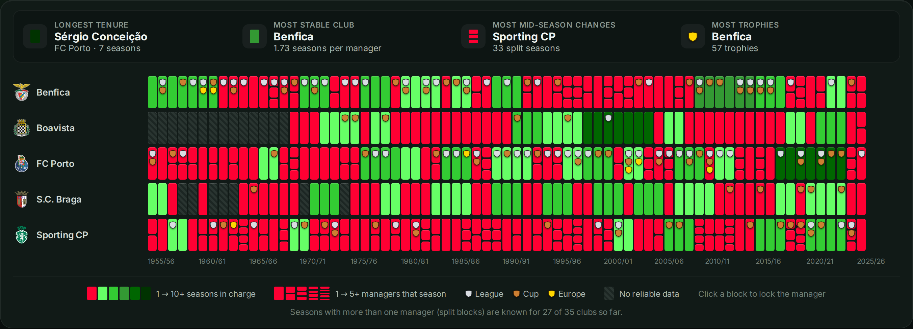
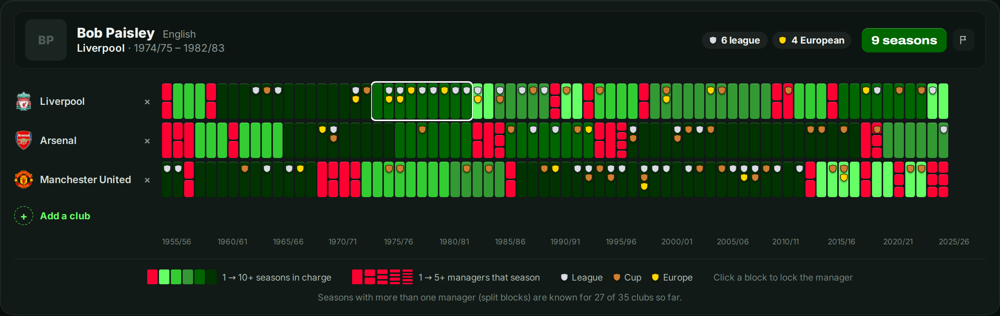

This site started with one question: does a stable manager win more trophies? Ferguson says yes, Mourinho says no. Seventy-one seasons at 35 of Europe's biggest clubs give a more careful answer.
The short answer: yes, but
Sort every season by how long the manager in charge stayed at the club, and a clear pattern appears. Seasons in which a club went through more than one manager ended with a trophy only 17% of the time. Seasons within a reign of ten or more full seasons ended with a trophy 53% of the time. For league titles alone the gap is even wider: 5% against 36%.
Data Focus: Stability and Silverware
Share of seasons that ended with at least one trophy, by the length of the manager's reign at the club. Based on the 2,158 seasons for which every change of manager is known.
- More than one manager that season 17% (league title: 5%)
- Reign of 1 full season 26% (15%)
- Reign of 2 to 3 seasons 37% (24%)
- Reign of 4 to 6 seasons 42% (26%)
- Reign of 7 to 9 seasons 40% (22%)
- Reign of 10 or more seasons 53% (36%)
The "but" is the direction of the arrow. A manager who wins is allowed to stay; a manager who loses is sacked, often mid-season, which is exactly what produces the red, split blocks in the visualization. Long reigns are partly a reward for trophies, not only a cause of them. The table cannot separate the two.
At club level, the link almost disappears
If stability were the recipe, the most stable clubs would be the most successful. They are not. Arsenal (almost six seasons per manager), Manchester United (five) and Liverpool (almost five) are the three most stable clubs in the dataset, thanks to Wenger, Ferguson, Busby, Shankly and Paisley. The clubs with the most trophies, Bayern Munich (61) and Real Madrid (60), change manager about every two seasons. Across all 35 clubs the correlation between average reign and trophies per season is 0.12: barely there.
Portugal makes the point most sharply. Its five clubs are the least stable in the dataset, with a manager lasting 1.5 seasons on average and one season in three split between managers. Sporting alone has 33 split seasons. Yet Benfica (57 trophies) and Porto (51) are among the most successful clubs in Europe by this count. In a league dominated by two or three clubs, money and squad matter more than the man on the bench. At a club that size, a sacking in October need not cost the title in May.

The carousel is not spinning faster
"Managers get less time than ever" is one of football's favourite complaints. In this dataset it is not true. Since the 1960s, a manager has lasted about two seasons on average in every decade, and the share of seasons with more than one manager has stayed between a fifth and a third.
Data Focus: Seven Decades of Turnover
- 1960s 2.2 seasons per manager · 18% split seasons
- 1970s 2.3 · 25%
- 1980s 2.1 · 25%
- 1990s 2.0 · 31%
- 2000s 2.0 · 27%
- 2010s 2.0 · 28%
- 2020s (six seasons) 2.1 · 28%
What has changed is the attention. A sacking in 1975 was a paragraph in the newspaper; now it is a week of television. The job was always this insecure.
After the dynasty
Twenty managers in the dataset stayed eight seasons or more at one club. During those reigns their clubs won 0.52 trophies per season. In the five seasons after they left, 0.36, with on average 2.3 different managers in those five years. Manchester United after Ferguson is the familiar example: David Moyes, Louis van Gaal and José Mourinho in five seasons, and no league title since. Arsenal after Wenger won one FA Cup in five seasons.
There is one clear exception, and it is instructive. When Bill Shankly retired in 1974, Liverpool promoted his assistant Bob Paisley from the famous boot room. Paisley won more than Shankly ever had: 1.2 trophies per season in his first five years, against 0.4 under Shankly. Only two other clubs kept winning at the same rate after a long reign: Real Madrid after Miguel Muñoz (1974) and Borussia Mönchengladbach after Hennes Weisweiler (1975). Continuity, it seems, is not about keeping one man but about keeping the idea.

Never go back?
Football has an old saying: never go back. The data agrees. In 121 cases a manager returned to a club he had managed before. His first spell brought 0.59 trophies per season, his later spells 0.35, and only 23 of the 121 did better the second time. Part of that is statistics rather than sentiment: clubs bring back the managers who did well, and an exceptional first spell is hard to repeat. The exceptions are all the more striking. Jupp Heynckes, in his third spell at Bayern, won the treble in 2012/13; Carlo Ancelotti won two Champions Leagues in his second spell at Real Madrid.
What the data can and cannot say
Stability and success go together, but mostly because success buys stability. The data gives no clear sign that a club wins more simply by keeping a manager longer, and several clubs win a great deal without ever doing so. What the data does suggest is that the transitions matter: clubs that lose a long-serving manager usually pay for it, unless the next one comes from inside the same idea.
How trophies are counted: league titles, national cups and major European trophies, with at most one of each per season. Split seasons are known for 27 of the 35 clubs; the tables above use only the seasons for which every change of manager is known. For Paris Saint-Germain, FC Twente and AZ, the earliest seasons belong to predecessor clubs. Data up to and including 2025/26.
Explore the Data Yourself

Compare clubs, follow a manager from club to club, or highlight one name across a whole league.
Launch the Interactive Visualization